Leverages dplyr to process the calculations of a plot inside a database. This package provides helper functions that abstract the work at three levels:
- Functions that ouput a
ggplot2object - Functions that outputs a
data.frameobject with the calculations - Creates the formula needed to calculate bins for a Histogram or a Raster plot
Installation
You can install the released version from CRAN:
# install.packages("dbplot")Or the the development version from GitHub, using the remotes package:
# install.packages("remotes")
# remotes::install_github("edgararuiz/dbplot")Connecting to a data source
For more information on how to connect to databases, including Hive, please visit http://db.rstudio.com
To use Spark, please visit the
sparklyrofficial website: http://spark.rstudio.com
Example
In addition to database connections, the functions work with sparklyr. A local RSQLite database will be used for the examples in this README.
ggplot
Histogram
By default dbplot_histogram() creates a 30 bin histogram
library(ggplot2)
db_flights |>
dbplot_histogram(distance)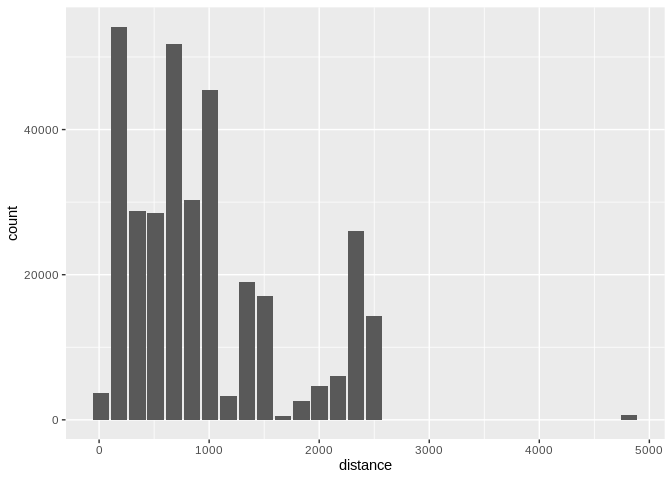
Use binwidth to fix the bin size
db_flights |>
dbplot_histogram(distance, binwidth = 400)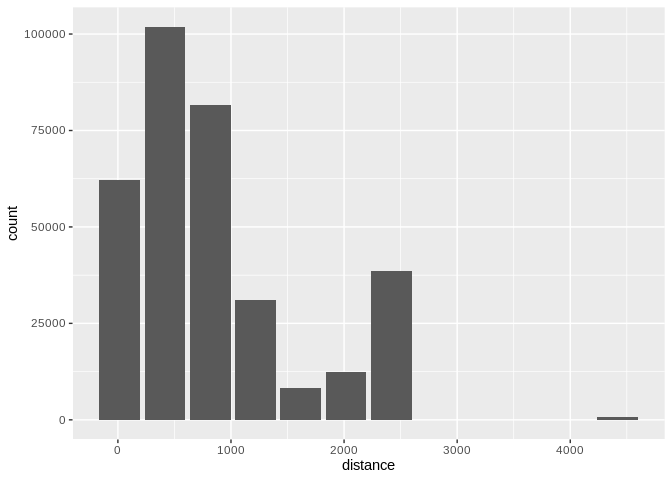
Because it outputs a ggplot2 object, more customization can be done
db_flights |>
dbplot_histogram(distance, binwidth = 400) +
labs(title = "Flights - Distance traveled") +
theme_bw()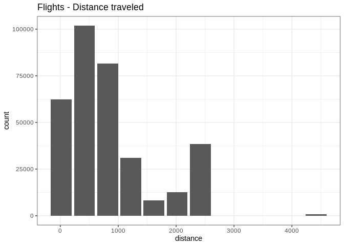
Raster
To visualize two continuous variables, we typically resort to a Scatter plot. However, this may not be practical when visualizing millions or billions of dots representing the intersections of the two variables. A Raster plot may be a better option, because it concentrates the intersections into squares that are easier to parse visually.
A Raster plot basically does the same as a Histogram. It takes two continuous variables and creates discrete 2-dimensional bins represented as squares in the plot. It then determines either the number of rows inside each square or processes some aggregation, like an average.
- If no
fillargument is passed, the default calculation will be count,n()
db_flights |>
dbplot_raster(sched_dep_time, sched_arr_time) 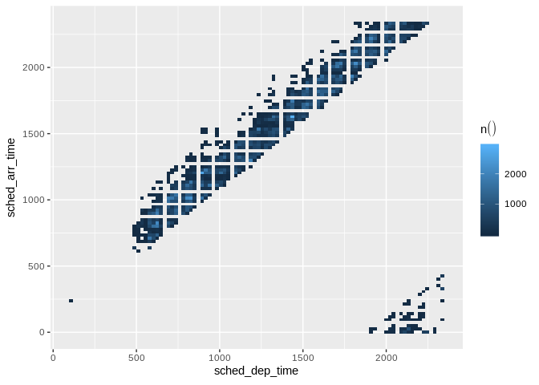
- Pass an aggregation formula that can run inside the database
db_flights |>
dbplot_raster(
sched_dep_time,
sched_arr_time,
mean(distance, na.rm = TRUE)
) 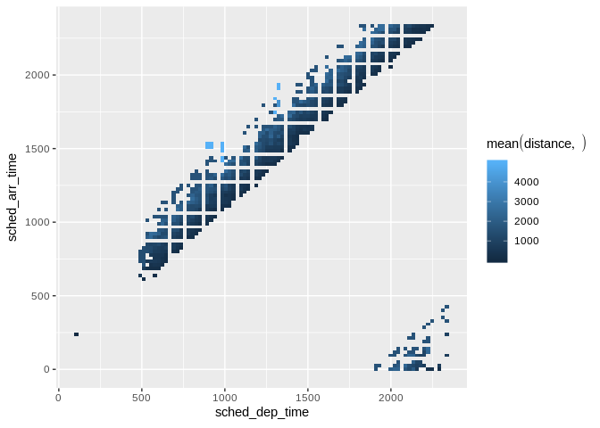
- Increase or decrease for more, or less, definition. The
resolutionargument controls that, it defaults to 100
db_flights |>
dbplot_raster(
sched_dep_time,
sched_arr_time,
mean(distance, na.rm = TRUE),
resolution = 20
) 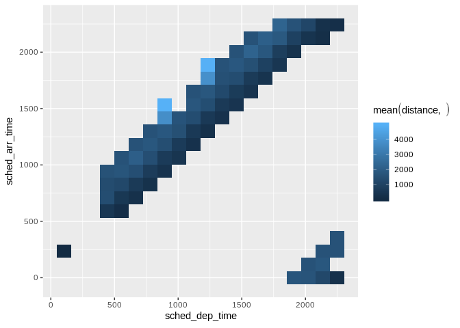
Bar Plot
-
dbplot_bar()defaults to a tally() of each value in a discrete variable
db_flights |>
dbplot_bar(origin)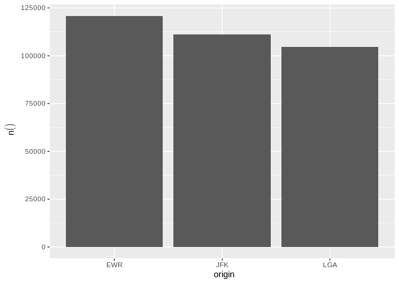
- Pass a formula, and column name, that will be operated for each value in the discrete variable
db_flights |>
dbplot_bar(origin, avg_delay = mean(dep_delay, na.rm = TRUE))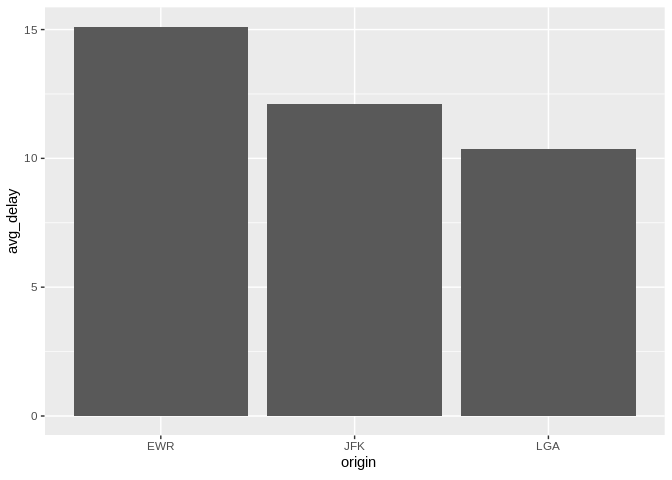
Line plot
-
dbplot_line()defaults to a tally() of each value in a discrete variable
db_flights |>
dbplot_line(month)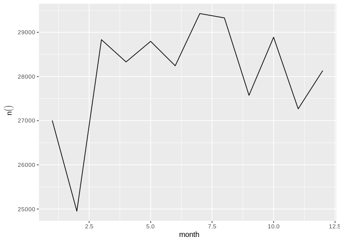
- Pass a formula that will be operated for each value in the discrete variable
db_flights |>
dbplot_line(month, avg_delay = mean(dep_delay, na.rm = TRUE))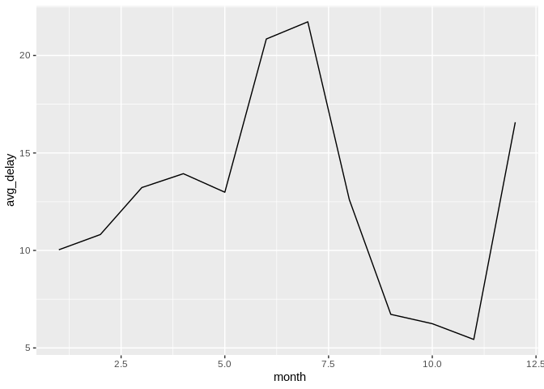
Boxplot
It expects a discrete variable to group by, and a continuous variable to calculate the percentiles and IQR. It doesn’t calculate outliers. It has been tested with the following connections:
- MS SQL Server
- PostgreSQL
- Oracle
sparklyr
Here is an example using dbplot_boxplot() with a local data frame:
nycflights13::flights |>
dbplot_boxplot(origin, distance)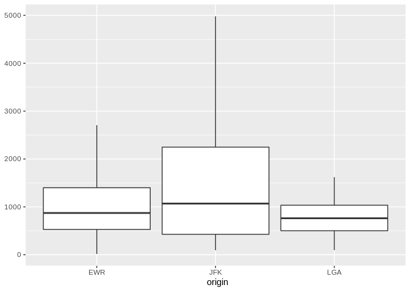
Calculation functions
If a more customized plot is needed, the data the underpins the plots can also be accessed:
-
db_compute_bins()- Returns a data frame with the bins and count per bin -
db_compute_count()- Returns a data frame with the count per discrete value -
db_compute_raster()- Returns a data frame with the results per x/y intersection -
db_compute_raster2()- Returns same asdb_compute_raster()function plus the coordinates of the x/y boxes -
db_compute_boxplot()- Returns a data frame with boxplot calculations
db_flights |>
db_compute_bins(arr_delay)
#> # A tibble: 28 x 2
#> arr_delay count
#> <dbl> <int>
#> 1 NA 9430
#> 2 -86 5325
#> 3 -40.7 207999
#> 4 4.53 79784
#> 5 49.8 19063
#> 6 95.1 7890
#> 7 140. 3746
#> 8 186. 1742
#> 9 231. 921
#> 10 276. 425
#> # … with 18 more rowsThe data can be piped to a plot
db_flights |>
filter(arr_delay < 100 , arr_delay > -50) |>
db_compute_bins(arr_delay) |>
ggplot() +
geom_col(aes(arr_delay, count, fill = count))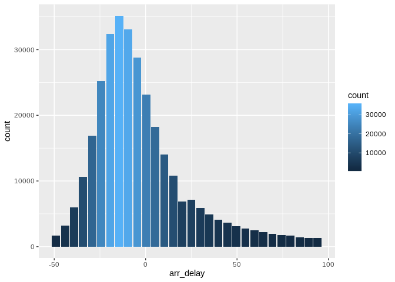
db_bin()
Uses ‘rlang’ to build the formula needed to create the bins of a numeric variable in an un-evaluated fashion. This way, the formula can be then passed inside a dplyr verb.
db_bin(var)
#> (((max(var, na.rm = TRUE) - min(var, na.rm = TRUE))/30) * ifelse(as.integer(floor((var -
#> min(var, na.rm = TRUE))/((max(var, na.rm = TRUE) - min(var,
#> na.rm = TRUE))/30))) == 30, as.integer(floor((var - min(var,
#> na.rm = TRUE))/((max(var, na.rm = TRUE) - min(var, na.rm = TRUE))/30))) -
#> 1, as.integer(floor((var - min(var, na.rm = TRUE))/((max(var,
#> na.rm = TRUE) - min(var, na.rm = TRUE))/30))))) + min(var,
#> na.rm = TRUE)
db_flights |>
group_by(x = !! db_bin(arr_delay)) |>
tally()
#> # Source: lazy query [?? x 2]
#> # Database: sqlite 3.29.0 [:memory:]
#> x n
#> <dbl> <int>
#> 1 NA 9430
#> 2 -86 5325
#> 3 -40.7 207999
#> 4 4.53 79784
#> 5 49.8 19063
#> 6 95.1 7890
#> 7 140. 3746
#> 8 186. 1742
#> 9 231. 921
#> 10 276. 425
#> # … with more rowsdb_flights |>
filter(!is.na(arr_delay)) |>
group_by(x = !! db_bin(arr_delay)) |>
tally()|>
collect |>
ggplot() +
geom_col(aes(x, n))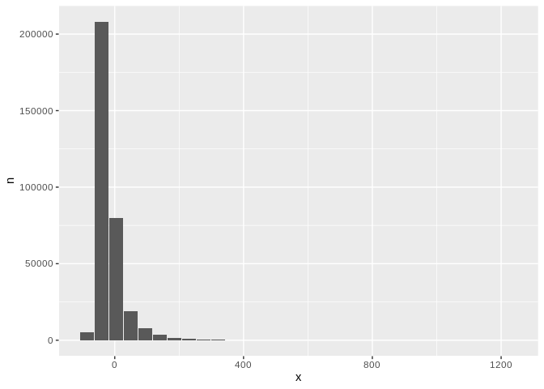
dbDisconnect(con)